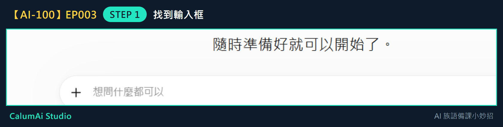
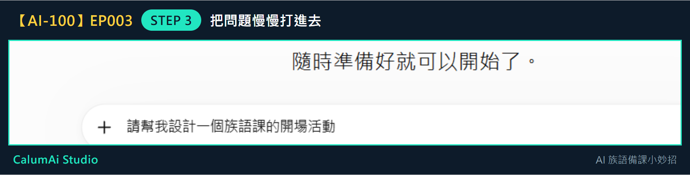
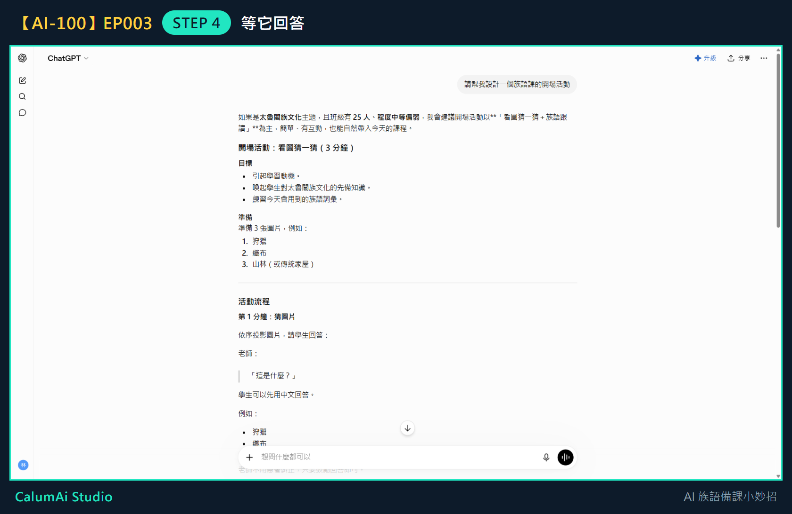

EP003 講義：問 ChatGPT 第一個備課問題
今天只做一件事
問 ChatGPT 第一個備課問題。不教 Prompt 公式、不教角色設定、不教多輪追問，這些留到之後幾集。
需要準備
- 已經能進入 ChatGPT（上一集完成的事）。
- 一個想問的簡單問題，不用寫得很厲害。
步驟 1：找到輸入框
進到 ChatGPT 後，看畫面中間：

這個框就是把想法告訴 ChatGPT 的地方。點一下它。
步驟 2：想一句簡單的問題
問題不用複雜，例如：
請幫我設計一個族語課的開場活動
步驟 3：慢慢打進去
把問題打進框裡，打完會長這樣：

打錯字沒關係，可以刪掉再改。確認沒問題後，按右邊的送出鍵（或按 Enter）。
步驟 4：等它回答
送出後先不要急，讓 ChatGPT 慢慢把答案寫出來。寫完長這樣：

只問了一句話，它就給出活動名稱、時間、步驟、效果，是一份可以直接看懂的活動草案。
步驟 5：先看大概就好
不需要馬上全部照用。如果有一兩句覺得適合，就先記下來，放進自己的備課筆記。
老師的小提醒
- AI 只是小助手，真正了解學生的人，永遠都是老師——回答不一定要照單全收。
- 如果 ChatGPT 的回答太長，可以直接跟它說「請改短一點」（下一集會練到這種追加要求）。
今日金句
想到什麼，先問一句。
下一集預告
下一集，我們會請 ChatGPT 幫忙整理一小段教材。